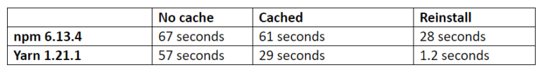

Chapter 4 package managers

npm vs yarn

yarn
- Ultra Fast
- Mega Secure
- Super Reliable
npm commands
- npm init, npm init --yes, npm init -y
- npm install jquery --save, npm i jquery -S, npm i jquery -S
- npm i --save-dev gulp, npm i -D gulp
- npm i --save --save-exact jQuery, npm i -SE jQuery
- npm i rxjs@latest -SE
- npm home jquery , npm repo jquery
- npm search jquery
- Ubuntu
- npm run "script"
nvm Node Version Manager
- nvm install node # "node" is an alias for the latest version
- nvm install 6.14.4 # or 10.10.0, 8.9.1, etc
- nvm use node
- nvm uninstall v14.15.4
- nvm alias default 6 # Set default node version